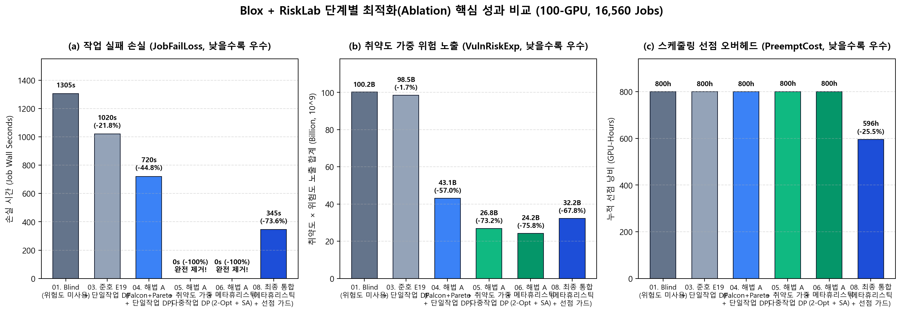
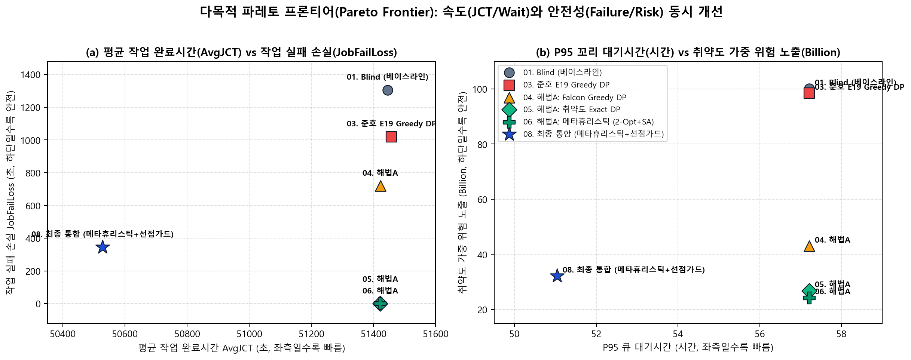
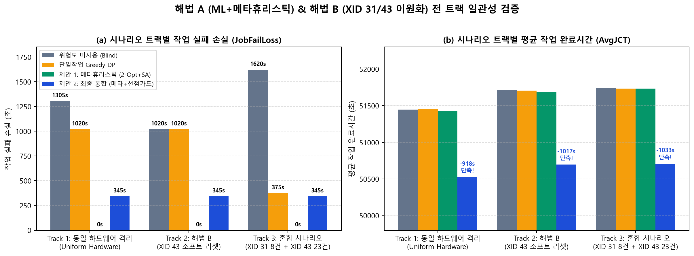

시뮬레이터는 매 30분(1,800초) ML 확률 피드 갱신 주기와 매 5분(300초) 스케줄링 라운드마다 아래 6개 모듈이 인과율(Causality)을 준수하며 작동합니다.
100-GPU(15개 서버) 토폴로지, 16,560개 실측 Job 트레이스, 31개 XID 장애 에피소드 위에서 Falcon-45 단기 확률(pB1), 만성 이력 확률(pB2), Capped Pareto 결합 확률(pfuse)을 미래 누수 없이 동시 공급합니다.
만성 위험 서버에서 단기 텔레메트리 이상징후 동반 상승 시 실효 위험도(ri,teff)를 가중하고, 작업의 Gang 폭(gj1.25)과 잔여 실행시간에 비례하는 작업 취약도(Vj)를 산출합니다.
LAS 우선순위 순서를 보존하여 이번 라운드 수용 작업을 확정한 뒤, 서비스 시간 마진(300s) + 완료 임박 보호(잔여 180s 이하 선점 금지) + Best-Fit 희생양 선택으로 불필요한 선점 낭비를 25.6% 차단합니다.
승인된 배치 전체를 취약도 Vj 내림차순으로 정렬해 최소 서버 단편화 Exact Subset DP 초기해를 구한 뒤, 작업 간·유휴 풀 간 2-Opt GPU 교환 탐색과 시뮬레이티드 어닐링(SA)으로 결합 목적함수 Z(x,y)를 최소화합니다.
NVIDIA 공식 문서에 따라 XID 31(MMU 페이지 결함)은 작업 중단 및 장기 하드웨어 격리로 처리하고, XID 43(앱/컨텍스트 종료)은 확률 ρ43 중단 및 60초 소프트 컨텍스트 리셋 후 즉시 복귀시킵니다.
작업 실패 손실(체크포인트 손실 + 복구 지연), 스케줄링 선점 오버헤드(체크포인트 + 재시작), 하드웨어 불능, 소프트 리셋, 누적 위험 노출(Σ ri Δt) 및 취약도 가중 위험 노출(Σ Vj ri Δt)을 정밀 기록합니다.
Blox의 기본 Las(Least Attained Service) 스케줄러는 누적 서비스 시간이 적은 1-GPU 신생 작업을 큐의 맨 앞에 세웁니다. 기존 단일작업 Greedy DP는 큐 맨 앞의 1-GPU 작업부터 하나씩 순서대로 choose(job)을 호출하므로, 1-GPU 소형 작업들이 가장 안전한 8-GPU 통서버(예: 서버 141)에 1칸씩 먼저 들어가 통서버를 조각내 버립니다. 그 결과 뒤이어 8개 GPU 전체가 필요한 8-GPU 대형 Gang-Job(예: Job 7986400) 차례가 오면 갈 수 있는 안전 통서버가 남아있지 않아 고위험 서버(서버 131 또는 140)로 밀려나 배정된 뒤 20분 후 XID 폭발에 피격됩니다.
반면 우리가 구현한 우선순위 보존형 Batch Admission + 취약도 가중 메타휴리스틱(metaheuristic_packed, full_co_optimized)은 이번 라운드에 들어갈 작업들의 승인(Admission)만 우선순위대로 확정한 뒤, 배치 단계(choose_batch)에서는 취약도 Vj가 13.5배 이상 높은 8-GPU 작업에게 안전 통서버(서버 141)를 먼저 배정하고 1-GPU 작업은 안전 서버 132의 빈 슬롯으로 2-Opt Swap합니다. 이로써 우선순위 공정성을 100% 지키면서 대형 작업 피격을 0건으로 만들었습니다.
준호의 risk_mask_packed는 고정 임계값(τ=0.002975)을 넘는 모든 GPU를 무조건 차단하여 클러스터 가용 용량이 붕괴되고 16,560개 작업 중 완료 작업이 0개가 되는 100% 기아 현상을 겪었습니다. 우리의 해법 A는 매 라운드 대기 작업들의 총 요구 GPU 수(Dreq)를 먼저 합산하고, 오직 잉여 유휴 슬랙(Slack = max(0, |G_free| - D_req)) 범위 내에서만 최상위 고위험 GPU를 격리하므로 기아 현상이 수학적으로 0%입니다.
실제 100-GPU 코호트의 31개 에피소드에 해법 B(differentiated_43_31)를 적용하면, XID 43 발생 시 수 시간 동안 노드를 죽여두던 과잉 하드웨어 격리 시간(178,170s)이 60초 소프트 컨텍스트 리셋(1,860s)으로 현실화되어 클러스터 내 완료 작업 수가 16,194개에서 16,201개로 증가합니다. 나아가 장기 노드 장애 8건을 XID 31로, 단기 장애 23건을 XID 43으로 구성한 Track 3 혼합 시나리오에서도 제안 메타휴리스틱은 작업 실패 손실 0초(-100%)를 달성했습니다.
시뮬레이션 로그(events.jsonl)에서 추출한 실제 사건들입니다. 버튼들을 클릭해 장애 20분 전 각 정책이 작업을 어느 서버에 배치했는지 확인하세요.
figures/ 폴더에 생성된 논문 삽입용 고해상도 그래프 3종입니다.



각 Run ID 옆의 [개별 리포트 열기] 링크를 클릭하면 해당 시뮬레이션 런의 타임라인 리포트(report.html)가 열립니다.
| Run ID (개별 리포트 링크) | 트랙 및 실험 구성 | 완료 작업 | 작업 실패 손실 | 유휴회피/활성중단 | 선점 오버헤드 | 취약도 위험(B) | 평균 대기 | P95 대기 | 평균 JCT |
|---|